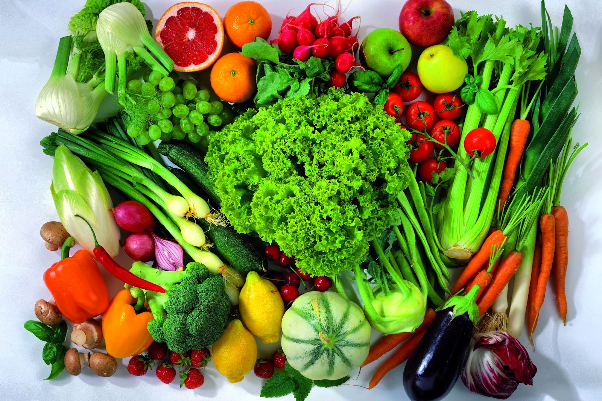

10 Dicas para uma Alimentação Mais Saudável
Adotar uma alimentação saudável é um passo essencial para melhorar a qualidade de vida, prevenir doenças emanter o corpo em equilíbrio. Pequenas mudanças nos hábitos alimentares podem fazer uma grande diferença. Confira 10 dicas práticas para começar:
1. Inclua mais frutas, legumes e verduras no dia a dia
Esses alimentos são fontes riquíssimas de vitaminas, minerais, fibras e antioxidantes, que ajudam a fortalecer o sistema imunológico e prevenir doenças. Tente variar as cores e tipos desses alimentos no prato, pois cada cor representa diferentes nutrientes. Uma boa meta é consumir pelo menos cinco porções por dia, distribuídas entre as refeições.
2. Prefira alimentos integrais
Os alimentos integrais, como arroz integral, pão integral e aveia, possuem maior quantidade de fibras, vitaminas e minerais do que suas versões refinadas. Essas fibras auxiliam no funcionamento do intestino, promovem maior saciedade e ajudam a controlar os níveis de açúcar no sangue, sendo ideais para quem busca mais energia e saúde no dia a dia.
3. Reduza o consumo de alimentos ultraprocessados
Alimentos como refrigerantes, biscoitos recheados, embutidos (salsichas, presunto) e salgadinhos contêm ingredientes artificiais, altos níveis de sódio, açúcar e gorduras prejudiciais à saúde. Esses produtos, quando consumidos em excesso, aumentam o risco de doenças crônicas, como hipertensão e obesidade. Opte por opções mais naturais e frescas sempre que possível.
4. Beba bastante água
A hidratação é fundamental para o bom funcionamento do organismo, ajudando na digestão, na circulação sanguínea e na regulação da temperatura corporal. Tente beber pelo menos 2 litros de água por dia, e lembre-se de que outras bebidas, como refrigerantes e sucos artificiais, não substituem a água e podem conter calorias desnecessárias.
5. Pratique o controle de porções
Comer em excesso, mesmo alimentos saudáveis, pode levar ao ganho de peso e outros problemas de saúde. Use pratos menores para ajudar no controle das porções e preste atenção nos sinais de saciedade do seu corpo. Mastigue devagar e faça refeições em um ambiente tranquilo, sem distrações como TV ou celular.
6. Inclua proteínas magras na dieta
As proteínas são essenciais para a construção e reparação dos tecidos do corpo, além de serem importantes para a sensação de saciedade. Opte por fontes magras, como frango, peixes, ovos e leguminosas, que são ricas em nutrientes e possuem menos gordura saturada do que carnes vermelhas.
7. Aposte em gorduras boas
Nem todas as gorduras são prejudiciais. Alimentos como abacate, castanhas, sementes, azeite de oliva e peixes ricos em ômega-2, como salmão e sardinha, fornecem gorduras saudáveis que ajudam a proteger o coração, melhorar a função cerebral e reduzir inflamações no corpo.
8. Faça refeições regulares
Pular refeições pode levar a picos de fome, fazendo com que você coma em excesso ou escolha alimentos menos saudáveis. Planeje suas refeições para que sejam feitas em horários regulares ao longo do dia, garantindo um metabolismo ativo e níveis estáveis de energia.
9. Reduza o consumo de açúcar
O consumo excessivo de açúcar está associado a problemas como obesidade, cáries e diabetes. Substitua doces e sobremesas açucaradas por opções mais saudáveis, como frutas frescas ou secas. Se sentir vontade de algo doce, experimente receitas caseiras com menos açúcar e ingredientes naturais.
10. Cozinhe mais em casa
Ao preparar suas refeições, você tem total controle sobre os ingredientes e métodos de preparo, o que ajuda a evitar excessos de sal, açúcar e gorduras ruins. Além disso, cozinhar em casa pode ser uma atividade relaxante e econômica, permitindo que você experimente novos sabores e crie pratos mais saudáveis para você e sua família.
Com essas dicas, você pode transformar sua alimentação de forma gradual e sustentável, promovendo saúde, energia e bem-estar a longo prazo. Para acompanhar seu progresso e avaliar sua saúde, é importante saber se você está dentro do peso ideal. Descubra seu Índice de Massa Corporal (IMC) clicando aqui!